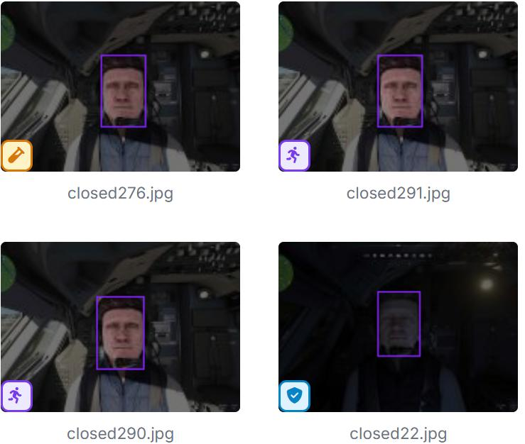
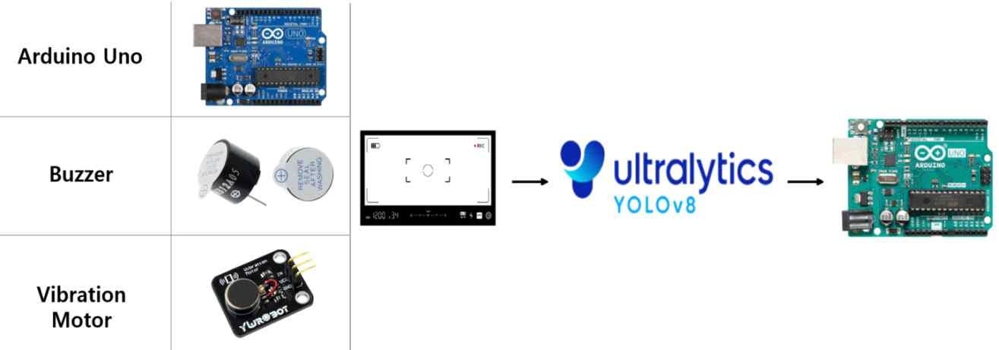
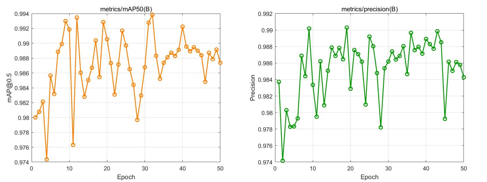
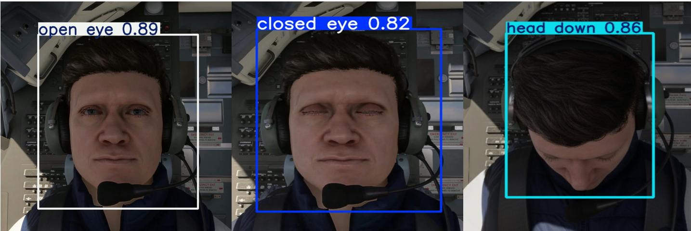
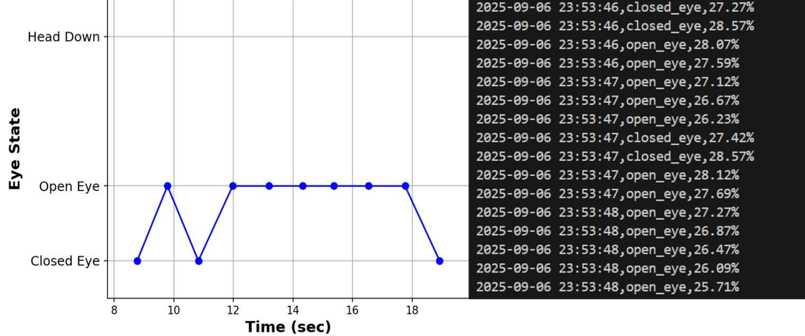
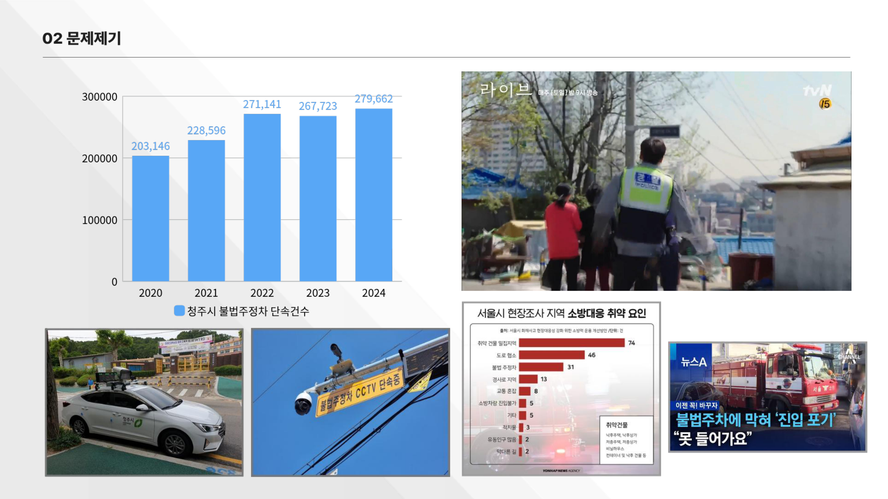
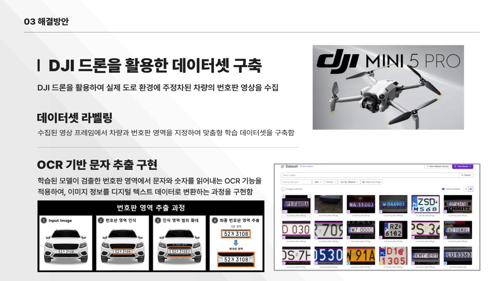
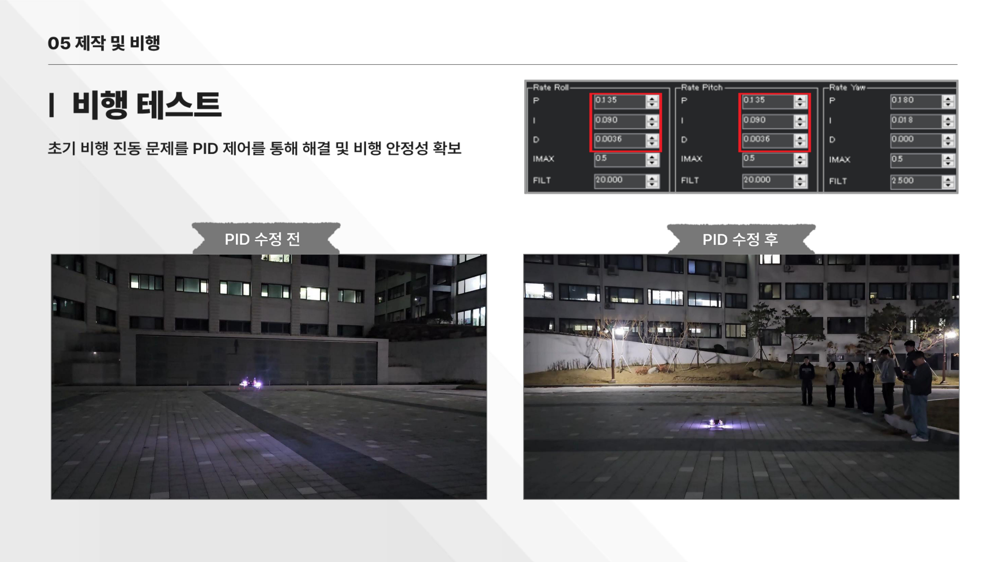

운행 중인 모든 버스의 실시간 위치와 혼잡도를 지도 위에 시각화하고, Random Forest 머신러닝 기반으로 정류장별 도착 시간을 예측하는 웹 서비스입니다. 현재 서울 여의도(162·261·461번)를 테스트 범위로 실제 배포 중이며, 동일 구조로 전국 확장을 목표로 합니다.
핵심 기능
실시간 버스 위치 — 5초마다 공공 API를 호출해 지도 위 버스 아이콘을 실시간 이동
혼잡도 색상 아이콘 — 버스 아이콘 색상으로 혼잡도를 즉시 시각화 (검색 불필요)
노선 구간별 혼잡도 — 노선 경로선 자체를 구간별 정체 색상으로 구분 표시
신호등 카운트다운 — 여의도 교차로 19개의 신호 잔여시간 실시간 표시
AI 도착 시간 예측 — 버스 아이콘 아래 정류장별 예측 도착 시간 자동 표시
운행 현황 패널 — 지도 옆 현재 운행 버스 현황 요약
자동 데이터 수집 — cron-job.org로 분당 1회 자동 수집 → Supabase 누적 저장
기존 서비스 대비 차별점
혼잡도 즉시 확인 — 기존 앱은 정류장 검색 후 텍스트 확인, 본 서비스는 지도를 여는 순간 모든 버스 색상으로 표시
노선 혼잡도 시각화 — 기존은 단색선, 본 서비스는 구간별 도로 정체 반영 색상 표시
신호등 정보 연동 — 기존 서비스 전무, 교차로 신호 잔여시간으로 예측 신뢰도 향상
ML 기반 도착 예측 — 기존 단순 평균값 대비, 노선·구간·시간대·요일·혼잡도를 복합 학습한 Random Forest 모델 적용
AI 모델 상세 (Random Forest)
30일
학습 데이터 (공공API 자동 수집)
100개
트리 수 · 최대 깊이 12단계
0.11분
예측 오차 MAE (약 6.6초)
6개
입력 특성 (노선·구간·시간대·요일·출퇴근·혼잡도)
응답 속도를 위해 노선·구간·시간대·요일의 모든 조합을 사전 계산해 DB에 저장, 조회 시 즉시 반환하는 구조로 설계했습니다.
활용 공공데이터
서울시 버스위치 정보 조회 서비스 (서울특별시) — 실시간 GPS·혼잡도·차량번호·현재구간, 5초마다 호출
서울시 정류소 정보 조회 서비스 (서울특별시) — 노선별 정류장 이름·위치·순번
교통안전 신호등 실시간 정보 (행정안전부 한국지역정보개발원) — 교차로별 신호 잔여시간
운영 비용 · 지속 가능성
Vercel Hobby + Supabase 무료 플랜 기반으로 운영 비용 0원을 실현했습니다. 매 분 자동 수집되는 데이터가 누적될수록 ML 모델 재학습 시 계절·날씨·요일 패턴까지 반영한 정밀 예측이 가능해집니다.
조종사의 졸음 및 주의력 저하로 인한 항공 사고 위험을 줄이기 위해, YOLOv8n 기반 실시간 얼굴 상태 인식과 PERCLOS 지표를 결합한 4단계 경고 시스템입니다. Microsoft Flight Simulator(MSFS) 환경에서 주야간 조종사 얼굴 데이터를 직접 수집하고 Roboflow로 라벨링해 1,800장 학습셋을 구성, 한국항공우주학회 2025 추계학술대회에 발표했습니다.
데이터셋 수집 — MSFS + Roboflow

Microsoft Flight Simulator에서 주·야간 시뮬레이션 중 조종사 얼굴 영상을 직접 캡처하고, Roboflow로 open_eye / closed_eye / head_down 3-class 라벨링. 총 1,800장(학습 88% / 검증 8% / 테스트 4%) 구성.
하드웨어 구성 — Arduino 경고 장치

PERCLOS 단계 신호를 시리얼 통신으로 Arduino에 전달, 단계별 버저 패턴(없음 / 단음 / 연속) 및 LED(초록·노랑·빨강)를 제어하는 하드웨어 경고 장치 제작.
주요 구현
MSFS 가상 환경에서 조종사 얼굴 주야간 데이터 1,800장 수집 및 Roboflow 라벨링
YOLOv8n 학습 (50 epoch): open_eye / closed_eye / head_down 3-class 실시간 분류
PERCLOS 지표 계산 → 4단계(정상 / 경고 / 위험 / head_down) 졸음 수준 정량화
Arduino 연동: 단계별 버저 패턴(없음·단음·연속) + LED(초록·노랑·빨강) 실시간 제어
프레임별 눈 상태 + PERCLOS 값 CSV 로깅 및 시계열 시각화
Random Forest 분류기로 졸음 단계 예측 정확도 추가 검증
PERCLOS 기반 단계별 경고 기준
정상 (Normal)
PERCLOS < 0.15
경고 없음 · LED 초록
경고 (Warning)
0.15 ≤ PERCLOS < 0.25
단발 버저 · LED 노랑
위험 (Danger)
PERCLOS ≥ 0.25
연속 버저 · LED 빨강
Head Down
head_down 클래스 감지
즉시 강제 경고 발동
모델 학습 그래프 — mAP & Precision

50 epoch 학습에서 mAP@0.5 및 Precision 모두 빠르게 수렴하여 전 구간 안정적인 0.98+ 달성.
모델 성능
0.989
mAP@0.5 (전체)
100%
open_eye 정확도
99%
head_down 정확도
96%
closed_eye 정확도
실시간 눈 상태 감지 예시

YOLOv8n 추론 결과: open_eye / closed_eye 바운딩 박스 및 confidence score 실시간 표시.
PERCLOS 실시간 로깅 데모

프레임별 눈 상태 탐지 결과와 PERCLOS 수치를 실시간으로 화면에 오버레이하고 CSV로 기록, 시계열 분석 가능.
Raspberry PiDJI Mini 5 ProYOLOv8OCRPythonOpenCVRoboflowPID 제어
프로젝트 개요
청주시 불법 주정차 단속 건수가 2020년 203,146건에서 2024년 279,662건으로 지속 증가하는 가운데, 고정형 CCTV와 단속 차량이 접근 불가한 사각지대 문제를 해결하기 위해 기획한 2025 C-PBL 프로젝트입니다. Raspberry Pi 기반 자체 제작 드론에 YOLOv8 차량 탐지 + OCR 번호판 인식을 탑재, 골목길·이면도로 등 기존 인프라가 닿지 않는 구역에서도 단속이 가능한 이동형 시스템을 구현했습니다. 팀장으로서 임베디드 시스템 구축 전반을 담당했습니다.
문제 배경 — 청주시 불법주정차 단속 현황

2020~2024년 청주시 불법주정차 단속건수 꾸준히 증가. 고정형 CCTV는 설치 사각지대 대응 불가, 단속차량은 협소한 골목 진입 불가 — 드론 단속의 필요성 확인.
기존 단속 방식 vs 드론 단속 비교
구분
고정형 CCTV
단속 차량
드론 단속
단속 범위
특정 지점 반경
차량 진입 가능 도로
사각지대 전역
기동성
없음
보통 (정체 시 제한)
매우 높음
경제성
설치·유지비 비쌈
인건비 발생
저비용 고효율
데이터셋 구축 & OCR 번호판 인식 파이프라인

DJI Mini 5 Pro로 실제 주정차 차량 항공 영상을 직접 수집하고 Roboflow로 차량·번호판 영역 라벨링. Input Image → 번호판 영역 인식(YOLOv8) → 인식 영역 +5~10% 확대 → 최종 번호판 추출 → OCR 문자 인식의 4단계 파이프라인 구성.
주요 구현
DJI Mini 5 Pro로 실제 도로에서 주정차 차량 항공 영상 데이터 직접 수집
Roboflow로 차량 및 번호판 영역 맞춤형 학습 데이터셋 구축·라벨링
YOLOv8 차량 탐지 → 번호판 영역 추출 (인식 범위 5~10% 확장)
OCR 기반 번호판 문자 인식 → GCS 화면 실시간 대조 확인
Raspberry Pi 4에 딥러닝 모델 이식, 실시간 차량·번호판 탐지 구현
RealFlight 시뮬레이터 기반 정밀 호버링 훈련 → 번호판 식별 최적 화각 유지
PID 튜닝으로 기체 진동 문제 해결 및 비행 안정성 확보
비행 테스트 — PID 튜닝으로 안정성 확보

초기 비행 진동 문제를 PID 파라미터(P·I·D) 튜닝으로 해결하여 안정적인 호버링 확보. Rate Roll/Pitch P=0.135, I=0.090, D=0.0036 최적값 도출.
실제 드론 차량 탐지 결과
실제 청주대학교 교내 도로에서 드론 비행 중 YOLOv8이 주정차 차량을 실시간으로 인식한 결과. 항공 시점 특유의 탑뷰 각도에서도 안정적인 CAR 탐지 확인.